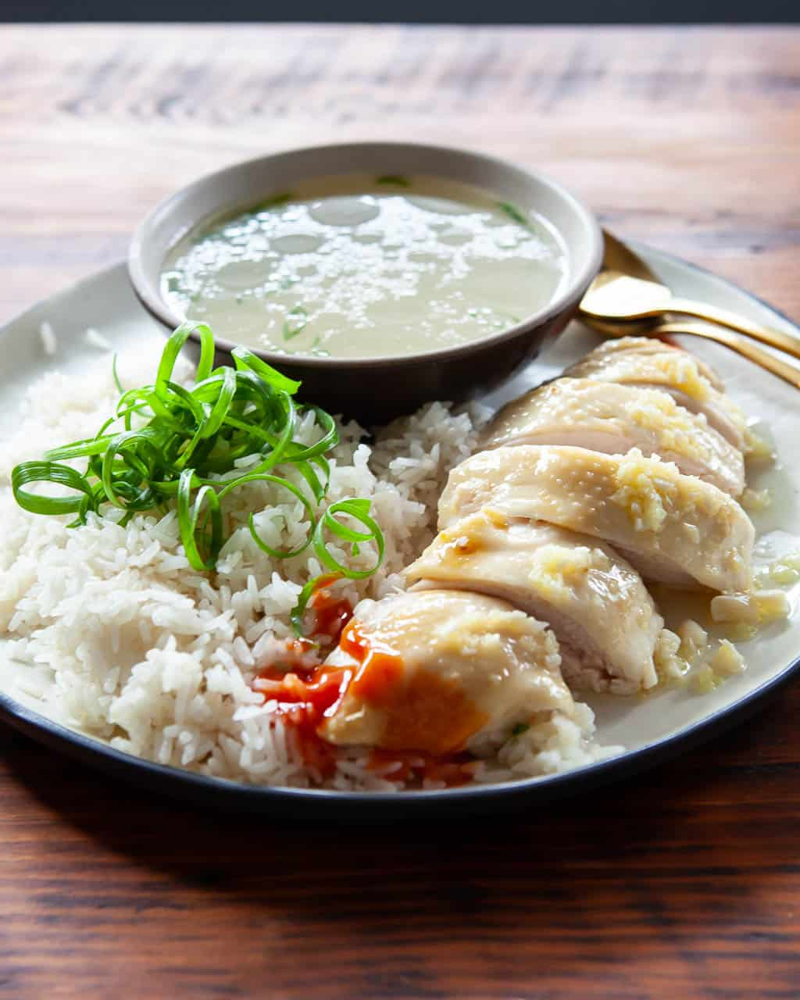

Hainanese Chicken Rice

SINGAPORE-STYLE HAINANESE CHICKEN RICE RECIPE
Ingredients:
Ingredients for chicken rice (A)
- 3 rice cups White Jasmine Rice, uncooked
- 3 TBsp Oil
- 3 Cups Chicken stock
- 2 tbsp Chopped Garlic Around 6 cloves of garlic
- 1 1/2 tbsp Grated Ginger Around 1 thumb-sized piece of ginger
- 8 Pandan Leaves To be folded into 2 bundles
- 1 1/2 tsp Salt
Ingredients for hainanese chicken (B)
- 1-1.2 Kg Chicken
- 3 TBsp Oil
- 3 litres Water Or just enough to submerge the whole chicken
- 5-6 Slices Ginger Around 1 thumb-sized piece of ginger
- 1 basin ice water
- 2 Tbsp Sesame Oil
Preparation time:
- Prep Time: 1.5 Hours
- Cook Time: 1.5 Hours
- Total Time: 2.5 Hours
Instructions:
A. Prepare the Rice
- Wash the rice and soak for 20 mins, then drain dry for another 20 mins and set aside. Peel the garlic and ginger. Grate the ginger and chop the garlic, then set aside.
B. Prepare the chicken
- Clean the chicken and cut off the fats. (see tips
- Wash the 2 bundles of spring onions. Cut off the white sections and set aside. Cut the green sections into small pieces and place in a large bowl, and refrigerate.
- With the aromatics, wash the pandan leaves and fold it up into 2 bundles. Peel and cut 6 slices of ginger. then set aside.
- Insert the 6 slices of ginger, the white section of the spring onion and 1 bundle of pandan leaves into the cavity of the chicken. Use a few tooth picks to seal up the cavity to prevent the stuffing from falling out during cooking.
C. Cook The Hainanese Chicken
- Add 3 litres of water to the tall pot and bring to a boil over high heat. Once boiling, hold the chicken by the neck and dunk the whole chicken in and out of the boiling water 3 times. On the final dunk, finally immerse the whole chicken into the water and cover the pot. (see tips to know why)
- Once the water is boiling (about 5 mins), turn the heat to low. Let the chicken simmer for another 10 mins, then turn off the heat but do NOT open the cover. Let the chicken continue to stew in the hot water for another 35 mins.
- Meanwhile, prepare a large basin of ice water. Once the chicken is cooked, use a pair of chopsticks to lift it out of the pot from under the wings, then plunge it into the ice water for about 20 mins.
- Remove the chicken and transfer onto a plate. Rub the whole chicken with 2 TBsp sesame oil. Measure out 3 cups of the chicken stock for cooking the rice, then freeze up the rest for another day.
D.Cook the chicken rice
- While the chicken is cooking, add 3 tbsp of oil to a wok and fry the chicken fats to extract the chicken oil. Remove and discard the crispy chicken fats once they turns golden brown.
- Add in the grated ginger and chopped garlic prepared earlier and fry till aromatic. Be careful not to burn the garlic. Once aromatic, immediately add in the washed and drained rice and the 1 1/2 tsp of salt, then mix well.
- Transfer the rice mixture into the rice cooker. Pour in the 3 cups of chicken stock. Place the second bundle of pandan on top of the rice and cook for extra fragrance.
- One the rice is cooked, remove the pandan leaves and loosen the rice with a pair of chopstick.
Back for more recipes!